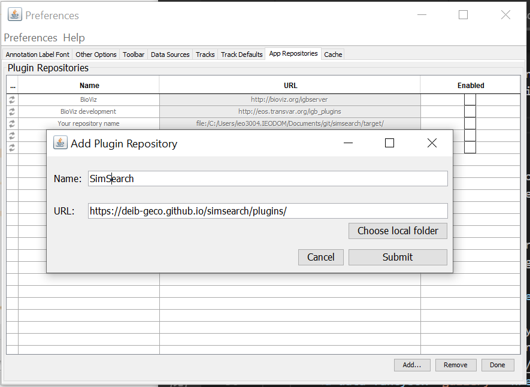

Install the Integrated Genome Browser (IGB)
The SimSearch plugin is an extension for the Integrated Genome Browser (IGB) that can be downloaded from http://bioviz.org/igb/
Add the SimSearch repository:
From IGB, go to the "plug-ins" tab and launch the app manager.
{kind=link}
Add the SimSearch repository: press the "add" button, and insert
"SimSearch" for name, and the url:
https://arnaudceol.github.io/simsearch/plugins/.

Then select the
SimSearch plugin and press "install".

A new SimSearch tab will appear in the
tab panel in IGB.
{kind=link}
Add the SimSearch Quickload server (facultative)
In order to make it easy to test the SimSearch plugin, we have compiled a Quickload repository with public data (mostly from ENCODE and Roadmap Epigenomics projects) for the human hg19 genome.

To access this repository go to "data access", "configure", "add...", and add the repository: name: "SimSearch" url: "https://arnaudceol.github.io/simsearch-quickload/". To speed up the plugin, you can also download the quickload directory and use it locally.